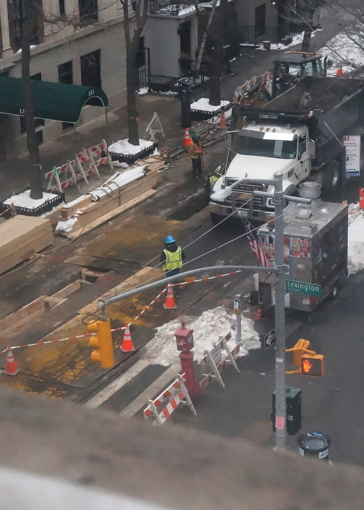
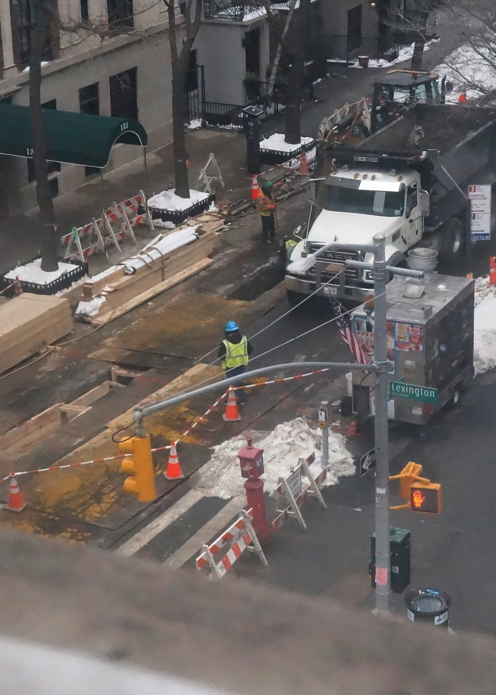

As for this photo, I was casually walking up some stairs with my camera buddy and thought it would be an easy pic. But of course, the more I look into it, you could say this photo may act like a time capsule. Think about. New York has commemorative vintage photos of their past, especially ones showcasing their construction of famous buildings. One notable example is Lunch atop a skyscraper. Nevertheless, who is to say this photo may not become famous one day? After all, we have predicted that robots or AI will one day take over people's jobs. Therefore, this photo will remind those in the future of a past where humans did jobs like construction. As for the changes, I just wanted to make the photo clearer.
Back To Homepage